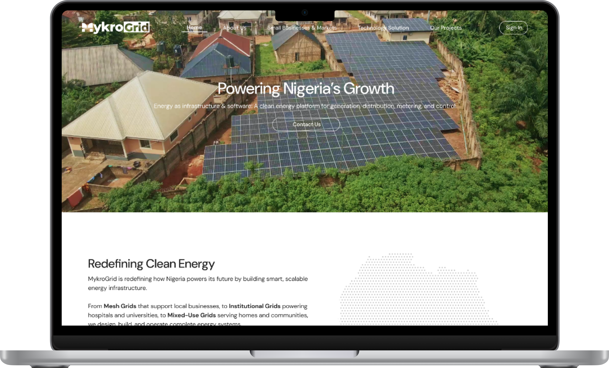
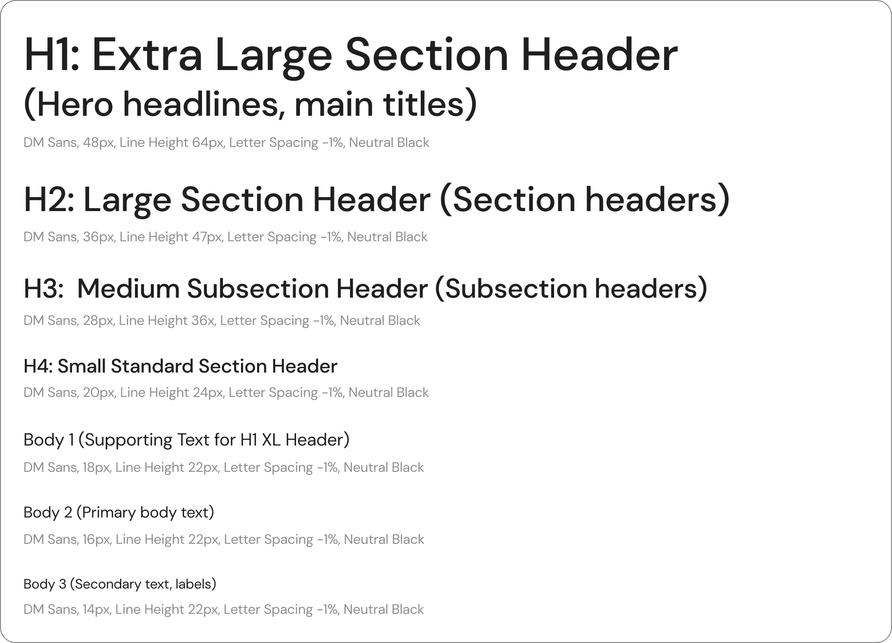
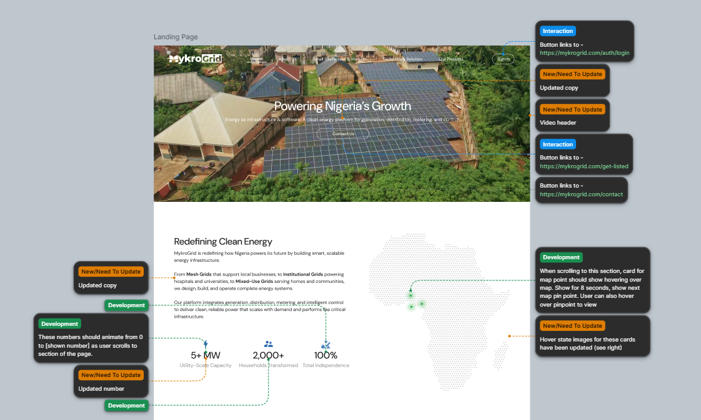
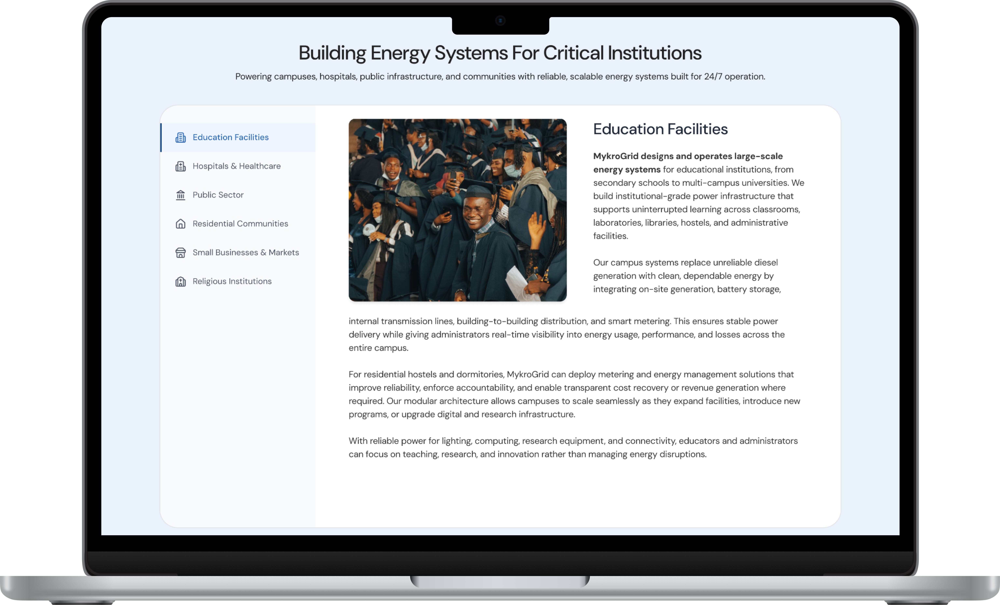
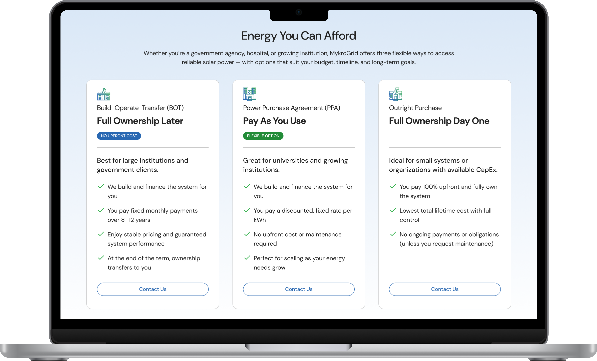

01
Confusing Structure
The site didn’t communicate MykroGrid’s product ecosystem or credibility as a funded cleantech startup.
Potential partners couldn’t understand what MykroGrid did or who it was for.

OVERVIEW
01
The Brief
Redesign MykroGrid’s marketing website to clarify offerings, build credibility, and drive partner engagement in Nigeria’s cleantech landscape.
02
The Problem
The original site lacked clarity and visual consistency. Confusing structure, limited brand cohesion, and a poor conversion funnel meant potential partners weren’t engaging.
03
The Outcome
A live, responsive website that clearly communicates MykroGrid’s product ecosystem to three distinct audiences — residents, institutional clients, and developers.
THE PROBLEM
01
The site didn’t communicate MykroGrid’s product ecosystem or credibility as a funded cleantech startup.
Potential partners couldn’t understand what MykroGrid did or who it was for.
02
Limited brand cohesion across digital channels made the company look unestablished.
The visual language didn’t match the ambition of the company.
03
Low engagement from potential partners — no clear path to contact or learn more.
Users had no clear next action after landing on the site.
WHAT WE SET OUT TO DO
GOAL 01
Clarify MykroGrid’s product ecosystem and service value for all target audiences.
GOAL 02
Strengthen brand identity through cohesive visuals, messaging, and content hierarchy.
GOAL 03
Increase partner engagement by simplifying navigation and optimizing the inquiry funnel.
HOW WE GOT THERE




THE RESULT



OUTCOMES
The redesigned site is live and serving MykroGrid’s three audience segments.
Delivered a complete Figma component library and responsive prototypes to the engineering team.
Built the visual foundation that now underpins all future MykroGrid web properties.
LOOKING BACK